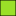
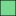
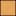

<!doctype html>
<html lang="en">
    <head>
        <meta charset="utf-8">
        <meta http-equiv="X-UA-Compatible" content="IE=edge">
        <meta name="viewport" content="initial-scale=1,user-scalable=no,maximum-scale=1,width=device-width">
        <meta name="mobile-web-app-capable" content="yes">
        <meta name="apple-mobile-web-app-capable" content="yes">
        <link rel="stylesheet" href="css/leaflet.css">
        <link rel="stylesheet" href="css/qgis2web.css">
        <style>
        html, body, #map {
            width: 100%;
            height: 100%;
            padding: 0;
            margin: 0;
        }
        </style>
        <title></title>
    </head>
    <body>
        <div id="map">
        </div>
        <script src="js/qgis2web_expressions.js"></script>
        <script src="js/leaflet.js"></script>
        <script src="js/leaflet.rotatedMarker.js"></script>
        <script src="js/leaflet.pattern.js"></script>
        <script src="js/leaflet-hash.js"></script>
        <script src="js/Autolinker.min.js"></script>
        <script src="js/rbush.min.js"></script>
        <script src="js/labelgun.min.js"></script>
        <script src="js/labels.js"></script>
        <script src="data/proycirc_0.js"></script>
        <script src="data/circ_1.js"></script>
        <script src="data/esc_2.js"></script>
        <script>
        var map = L.map('map', {
            zoomControl:true, maxZoom:28, minZoom:1
        }).fitBounds([[-51.7389245922,-69.39443072],[-51.5563289078,-69.12117788]]);
        var hash = new L.Hash(map);
        map.attributionControl.addAttribution('<a href="https://www.santacruz.gob.ar/" target="_blank">Provincia de Santa Cruz</a>');
        var bounds_group = new L.featureGroup([]);
        var basemap0 = L.tileLayer('http://www.google.cn/maps/vt?lyrs=s@189&gl=cn&x={x}&y={y}&z={z}', {
            attribution: '<a> </a>',
            maxZoom: 28
        });
        basemap0.addTo(map);
        var basemap1 = L.tileLayer('https://wms.ign.gob.ar/geoserver/gwc/service/tms/1.0.0/capabaseargenmap@EPSG%3A3857@png/{z}/{x}/{-y}.png.', {
            attribution: '<a> </a>',
            maxZoom: 28
        });
        basemap1.addTo(map);
        function setBounds() {
        }
        function pop_proycirc_0(feature, layer) {
            var popupContent = '<table>\
                    <tr>\
                        <th scope="row">Nombre</th>\
                        <td>' + (feature.properties['Name'] !== null ? Autolinker.link(String(feature.properties['Name'])) : '') + '</td>\
                    </tr>\
                </table>';
            layer.bindPopup(popupContent, {maxHeight: 400});
        }

        function style_proycirc_0_0() {
            return {
                pane: 'pane_proycirc_0',
                opacity: 1,
                color: 'rgba(0,0,0,1.0)',
                dashArray: '',
                lineCap: 'butt',
                lineJoin: 'miter',
                weight: 1.0, 
                fill: true,
                fillOpacity: 1,
                fillColor: 'rgba(94,215,223,1.0)',
            }
        }
        map.createPane('pane_proycirc_0');
        map.getPane('pane_proycirc_0').style.zIndex = 400;
        map.getPane('pane_proycirc_0').style['mix-blend-mode'] = 'normal';
        var layer_proycirc_0 = new L.geoJson(json_proycirc_0, {
            attribution: '<a href=""></a>',
            pane: 'pane_proycirc_0',
            onEachFeature: pop_proycirc_0,
            style: style_proycirc_0_0,
        });
        bounds_group.addLayer(layer_proycirc_0);
        map.addLayer(layer_proycirc_0);
        function pop_circ_1(feature, layer) {
            var popupContent = '<table>\
                    <tr>\
                        <th scope="row">Circuito Electoral N°</th>\
                        <td>' + (feature.properties['Name'] !== null ? Autolinker.link(String(feature.properties['Name'])) : '') + '</td>\
                    </tr>\
                </table>';
            layer.bindPopup(popupContent, {maxHeight: 400});
        }

        function style_circ_1_0(feature) {
            switch(String(feature.properties['Name'])) {
                case '1800':
                    return {
                pane: 'pane_circ_1',
                opacity: 1,
                color: 'rgba(0,0,0,0.39)',
                dashArray: '',
                lineCap: 'butt',
                lineJoin: 'miter',
                weight: 1.0, 
                fill: true,
                fillOpacity: 1,
                fillColor: 'rgba(154,224,40,0.39)',
            }
                    break;
                case '1810':
                    return {
                pane: 'pane_circ_1',
                opacity: 1,
                color: 'rgba(0,0,0,0.39)',
                dashArray: '',
                lineCap: 'butt',
                lineJoin: 'miter',
                weight: 1.0, 
                fill: true,
                fillOpacity: 1,
                fillColor: 'rgba(120,218,144,0.39)',
            }
                    break;
                case '1820':
                    return {
                pane: 'pane_circ_1',
                opacity: 1,
                color: 'rgba(0,0,0,0.39)',
                dashArray: '',
                lineCap: 'butt',
                lineJoin: 'miter',
                weight: 1.0, 
                fill: true,
                fillOpacity: 1,
                fillColor: 'rgba(229,165,92,0.39)',
            }
                    break;
                case '1830':
                    return {
                pane: 'pane_circ_1',
                opacity: 1,
                color: 'rgba(0,0,0,0.39)',
                dashArray: '',
                lineCap: 'butt',
                lineJoin: 'miter',
                weight: 1.0, 
                fill: true,
                fillOpacity: 1,
                fillColor: 'rgba(202,23,82,0.39)',
            }
                    break;
                case '1840':
                    return {
                pane: 'pane_circ_1',
                opacity: 1,
                color: 'rgba(0,0,0,0.39)',
                dashArray: '',
                lineCap: 'butt',
                lineJoin: 'miter',
                weight: 1.0, 
                fill: true,
                fillOpacity: 1,
                fillColor: 'rgba(103,194,204,0.39)',
            }
                    break;
                case '1850':
                    return {
                pane: 'pane_circ_1',
                opacity: 1,
                color: 'rgba(0,0,0,0.39)',
                dashArray: '',
                lineCap: 'butt',
                lineJoin: 'miter',
                weight: 1.0, 
                fill: true,
                fillOpacity: 1,
                fillColor: 'rgba(214,212,54,0.39)',
            }
                    break;
            }
        }
        map.createPane('pane_circ_1');
        map.getPane('pane_circ_1').style.zIndex = 401;
        map.getPane('pane_circ_1').style['mix-blend-mode'] = 'normal';
        var layer_circ_1 = new L.geoJson(json_circ_1, {
            attribution: '<a href=""></a>',
            pane: 'pane_circ_1',
            onEachFeature: pop_circ_1,
            style: style_circ_1_0,
        });
        bounds_group.addLayer(layer_circ_1);
        map.addLayer(layer_circ_1);
        function pop_esc_2(feature, layer) {
            var popupContent = '<table>\
                    <tr>\
                        <th scope="row">Nombre</th>\
                        <td>' + (feature.properties['Name'] !== null ? Autolinker.link(String(feature.properties['Name'])) : '') + '</td>\
                    </tr>\
                </table>';
            layer.bindPopup(popupContent, {maxHeight: 400});
        }

        function style_esc_2_0() {
            return {
                pane: 'pane_esc_2',
        rotationAngle: 0.0,
        rotationOrigin: 'center center',
        icon: L.icon({
            iconUrl: 'markers/accommodation_camping.svg',
            iconSize: [40.0, 40.0]
        }),
            }
        }
        map.createPane('pane_esc_2');
        map.getPane('pane_esc_2').style.zIndex = 402;
        map.getPane('pane_esc_2').style['mix-blend-mode'] = 'normal';
        var layer_esc_2 = new L.geoJson(json_esc_2, {
            attribution: '<a href=""></a>',
            pane: 'pane_esc_2',
            onEachFeature: pop_esc_2,
            pointToLayer: function (feature, latlng) {
                var context = {
                    feature: feature,
                    variables: {}
                };
                return L.marker(latlng, style_esc_2_0(feature));
            },
        });
        bounds_group.addLayer(layer_esc_2);
        map.addLayer(layer_esc_2);
        var baseMaps = {'Imagen Satelital': basemap0, 'Mapa Base': basemap1};
        L.control.layers(baseMaps,{' Escuela': layer_esc_2,'Circuito Electoral<br /><table><tr><td style="text-align: center;"></td><td>1800</td></tr><tr><td style="text-align: center;"></td><td>1810</td></tr><tr><td style="text-align: center;"></td><td>1820</td></tr><tr><td style="text-align: center;"></td><td>1830</td></tr><tr><td style="text-align: center;"></td><td>1840</td></tr><tr><td style="text-align: center;"></td><td>1850</td></tr></table>': layer_circ_1,' Proyecto Nuevo Circuito': layer_proycirc_0,},{collapsed:false}).addTo(map);
        setBounds();
		L.Control.Watermark = L.Control.extend({
    onAdd: function(map) {
        var img = L.DomUtil.create('img');img.src = "legend/ConLogo250x60.png";img.style.width = '200px';
        return img; }, onRemove: function(map) {// Nothing to do here
    }
});
L.control.watermark = function(opts) {
    return new L.Control.Watermark(opts);
}
L.control.watermark({ position: 'bottomleft' }).addTo(map);
        </script>
    </body>
</html>
